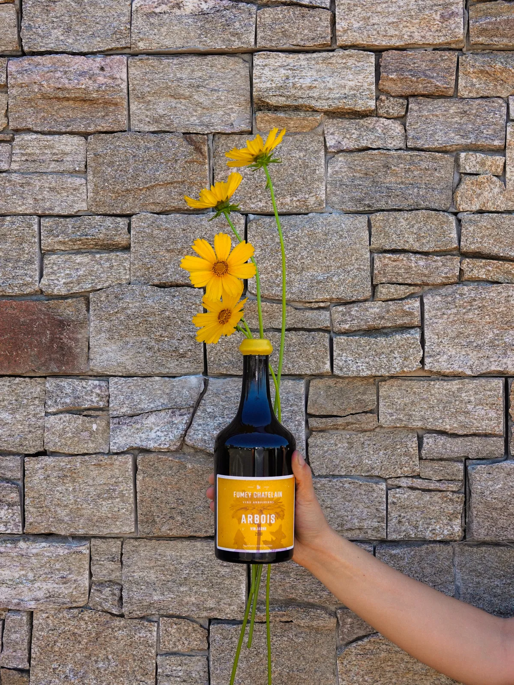

Jura
Fumey Chatelin
Un petit tour dans le Jura, messieurs-dames ?
À Montigny-lès-Arsures, Raphaël et Adeline produisent des vins vibrants grâce à des raisins cultivés dans le respect de la nature et de l'environnement. Marin, leur fils, est revenu au domaine en 2020 pour insuffler une nouvelle dynamique, puisant dans ses riches expériences à l'international.
Qui dit Jura, dit cépages autochtones ! Au programme : vin jaune, savagnin, trousseau et ploussard.
Le coup de cœur de Tanguy : No Sin Tou Tsefs, un super assemblage de pinot noir, trousseau et ploussard. Un vin infusé, et incroyablement digeste !
Et toi, tu débouches quoi comme canon pour accompagner un vieux comté ?
Quantités limitées
